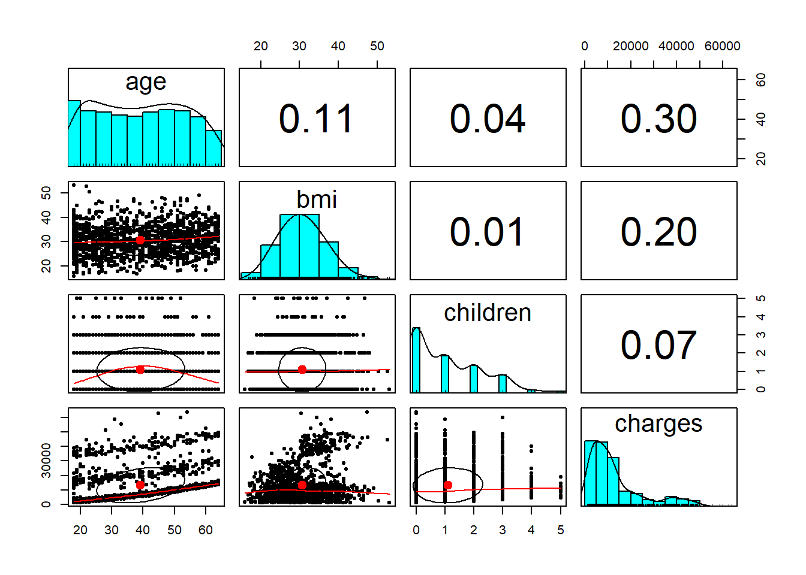
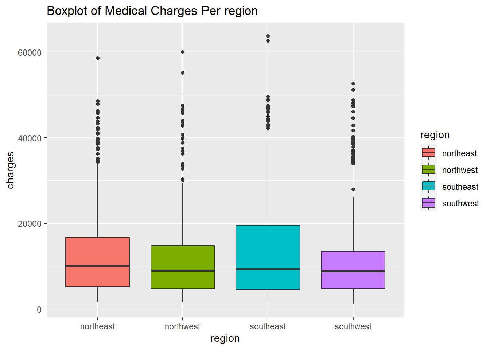
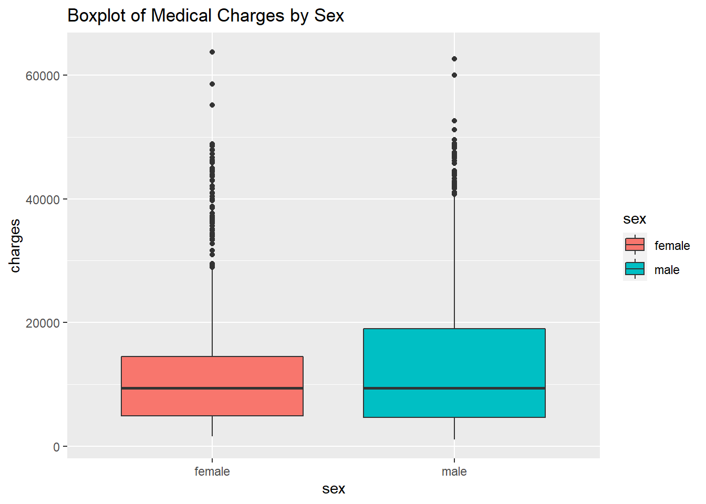
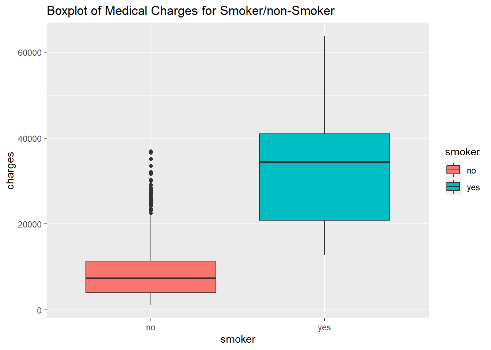
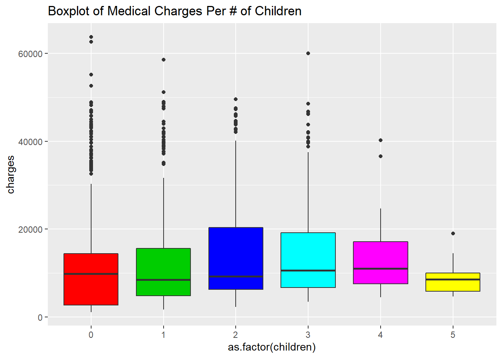
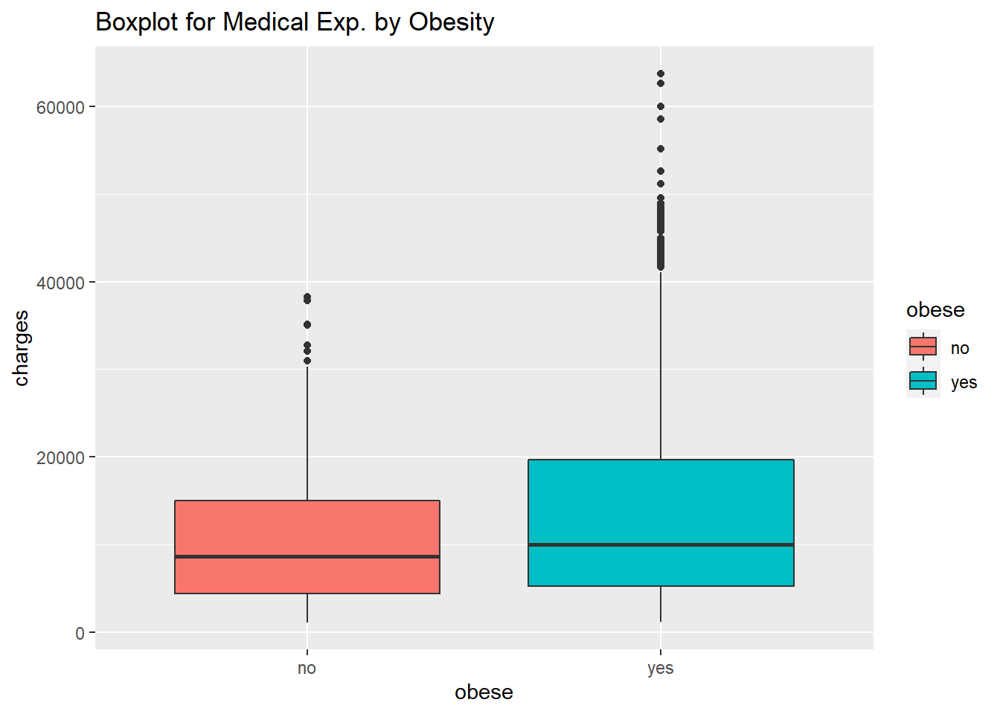
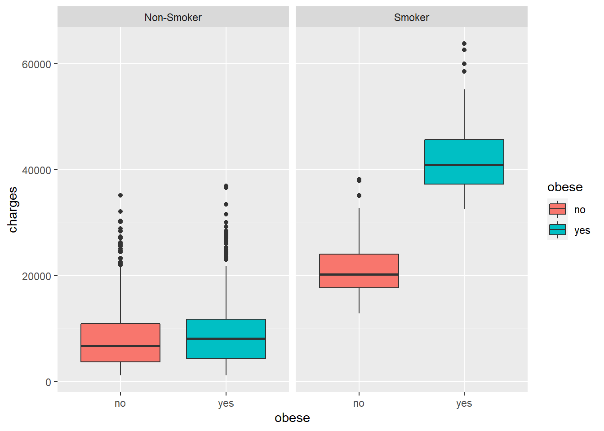

This projects uses the medical cost personal dataset to see what variables are most likely associated with increasing medical costs for an individual, and how much those costs are.
head(dat)## # A tibble: 6 x 7
## age sex bmi children smoker region charges
## <dbl> <chr> <dbl> <dbl> <chr> <chr> <dbl>
## 1 19 female 27.9 0 yes southwest 16885.
## 2 18 male 33.8 1 no southeast 1726.
## 3 28 male 33 3 no southeast 4449.
## 4 33 male 22.7 0 no northwest 21984.
## 5 32 male 28.9 0 no northwest 3867.
## 6 31 female 25.7 0 no southeast 3757.str(dat)## Classes 'tbl_df', 'tbl' and 'data.frame': 1338 obs. of 7 variables:
## $ age : num 19 18 28 33 32 31 46 37 37 60 ...
## $ sex : chr "female" "male" "male" "male" ...
## $ bmi : num 27.9 33.8 33 22.7 28.9 ...
## $ children: num 0 1 3 0 0 0 1 3 2 0 ...
## $ smoker : chr "yes" "no" "no" "no" ...
## $ region : chr "southwest" "southeast" "southeast" "northwest" ...
## $ charges : num 16885 1726 4449 21984 3867 ...The variables in this dataset include age, sex, bmi, # of children, region, smoker and the amount charged.
I’ll have a look at a quick summary of the data
## age sex bmi children
## Min. :18.00 Length:1338 Min. :15.96 Min. :0.000
## 1st Qu.:27.00 Class :character 1st Qu.:26.30 1st Qu.:0.000
## Median :39.00 Mode :character Median :30.40 Median :1.000
## Mean :39.21 Mean :30.66 Mean :1.095
## 3rd Qu.:51.00 3rd Qu.:34.69 3rd Qu.:2.000
## Max. :64.00 Max. :53.13 Max. :5.000
## smoker region charges
## Length:1338 Length:1338 Min. : 1122
## Class :character Class :character 1st Qu.: 4740
## Mode :character Mode :character Median : 9382
## Mean :13270
## 3rd Qu.:16640
## Max. :63770
To see what variables may most closely impact an individuals medical cost, I’ll create a correlation matrix of the numeric variables in this data set.
## age bmi children charges
## age 1.0000000 0.1092719 0.04246900 0.29900819
## bmi 0.1092719 1.0000000 0.01275890 0.19834097
## children 0.0424690 0.0127589 1.00000000 0.06799823
## charges 0.2990082 0.1983410 0.06799823 1.00000000Age is most closely correlated with spending on ones health.
I’ll view these correlations visually. 
Once again these plots show that age is most closely correlated with charges among the numeric variables. None of the numeric variables are highly correlated between one another, so this eliminates the problem of multicollinearity. A final observation from these plots is to note that age and charges may not have a linear relationship.
Plotting the charges by region 
Those in southeast have the highest third quartile in spending, with some outliers spending the most out of all individuals.
Plotting charges by gender 
Men have a higher third quartile than spending than females.
Plotting charges for smokers and non-smokers 
smokers spend signifiantly more than non-smokers
Plotting charges by number of children 
Those with 3 and 4 children spend the most on average, while those with 0 children also spend a fair amount. It is likely that there are less data points for those with more children, since it is rarer to have many children.
I’ll investigate this clam
kid_spend <- dat %>% group_by(children) %>% summarize(money_spent = sum(charges), num_fam = n())
kid_spend## # A tibble: 6 x 3
## children money_spent num_fam
## <dbl> <dbl> <int>
## 1 0 7098070. 574
## 2 1 4124900. 324
## 3 2 3617655. 240
## 4 3 2410785. 157
## 5 4 346266. 25
## 6 5 158149. 18There are less data points for families with less kids, because fewer families tend to have more than 3 kids.
I’ll create a new variable for those who are labeled as obese based on their BMI. According to the CDC, if your BMI is above 30 you are considered obese. Obese will be the name of the new variable, with responses being ‘yes’ or ‘no.’
dat_2$obese <- ifelse(dat_2$bmi> 30,"yes" ,"no")
head(dat_2)## # A tibble: 6 x 8
## age sex bmi children smoker region charges obese
## <dbl> <chr> <dbl> <dbl> <chr> <chr> <dbl> <chr>
## 1 19 female 27.9 0 yes southwest 16885. no
## 2 18 male 33.8 1 no southeast 1726. yes
## 3 28 male 33 3 no southeast 4449. yes
## 4 33 male 22.7 0 no northwest 21984. no
## 5 32 male 28.9 0 no northwest 3867. no
## 6 31 female 25.7 0 no southeast 3757. no
I’ll create a plot to show the impact of being obese on medical expenses. 
Charges are slightly higher on average, with many more extremes in charges for those who are obese.
Intuition tells us obese smokers are usually at the most risk of having health problems I’ll make a plot for this demographic.

Obese Smokers are at by far the most risk, while smokers who are not obese are at more risk than those who are just obese.
I’ll create a few models so that I can tune the variables selected to maximize my R-squared and adjusted R-squared, which represents the proportion of the variance for a dependent variable that’s explained by an independent variable or variables in a regression model.
First I will implement a kitchen sink approach using the variables.
model_1 <- lm(charges~ ., dat_2)
summary(model_1)##
## Call:
## lm(formula = charges ~ ., data = dat_2)
##
## Residuals:
## Min 1Q Median 3Q Max
## -11980.6 -3462.0 -74.5 1549.9 28429.1
##
## Coefficients:
## Estimate Std. Error t value Pr(>|t|)
## (Intercept) -7511.24 1278.50 -5.875 5.34e-09 ***
## age 257.11 11.78 21.833 < 2e-16 ***
## sexmale -153.70 329.53 -0.466 0.640999
## bmi 142.82 46.22 3.090 0.002044 **
## children 475.82 136.38 3.489 0.000501 ***
## smokeryes 23855.09 408.89 58.341 < 2e-16 ***
## regionnorthwest -389.15 471.41 -0.826 0.409229
## regionsoutheast -880.42 474.62 -1.855 0.063819 .
## regionsouthwest -930.49 473.03 -1.967 0.049382 *
## obeseyes 2947.87 548.59 5.374 9.11e-08 ***
## ---
## Signif. codes: 0 '***' 0.001 '**' 0.01 '*' 0.05 '.' 0.1 ' ' 1
##
## Residual standard error: 6000 on 1328 degrees of freedom
## Multiple R-squared: 0.7562, Adjusted R-squared: 0.7546
## F-statistic: 457.7 on 9 and 1328 DF, p-value: < 2.2e-16The variables which we see have a significant impact in determing the amount of personal will be charged for medical costs at a p-value of 0.05 include age, bmi, children, obeseyes, and regionsouthwest.
Now, a new model using only significant variables
model_2 <- lm(charges ~ age + bmi + children + smoker + region + obese, data = dat_2)
summary(model_2)##
## Call:
## lm(formula = charges ~ age + bmi + children + smoker + region +
## obese, data = dat_2)
##
## Residuals:
## Min 1Q Median 3Q Max
## -12037.8 -3457.7 -122.1 1565.0 28363.9
##
## Coefficients:
## Estimate Std. Error t value Pr(>|t|)
## (Intercept) -7576.63 1270.41 -5.964 3.15e-09 ***
## age 257.25 11.77 21.858 < 2e-16 ***
## bmi 142.42 46.20 3.083 0.002094 **
## children 474.72 136.32 3.482 0.000513 ***
## smokeryes 23840.76 407.61 58.489 < 2e-16 ***
## regionnorthwest -388.20 471.26 -0.824 0.410236
## regionsoutheast -879.82 474.48 -1.854 0.063922 .
## regionsouthwest -929.73 472.89 -1.966 0.049499 *
## obeseyes 2944.64 548.38 5.370 9.30e-08 ***
## ---
## Signif. codes: 0 '***' 0.001 '**' 0.01 '*' 0.05 '.' 0.1 ' ' 1
##
## Residual standard error: 5998 on 1329 degrees of freedom
## Multiple R-squared: 0.7562, Adjusted R-squared: 0.7547
## F-statistic: 515.2 on 8 and 1329 DF, p-value: < 2.2e-16I removed the variables that are less important, but R-squared has barely improved.
I’ll create another new variable where I square every individuals age and then create an interaction variable in the model to show the impact of being both a smoker and being obese had an a persons medical cost.
Squaring the individuals age accounts for non-linear relationship between the age and charges variables which was shown in the graph in the exploratory data analysis. Both these change to the model should increase the R-squared.
##
## Call:
## lm(formula = charges ~ age + age_sq + bmi + children + region +
## smoker * obese, data = dat_2)
##
## Residuals:
## Min 1Q Median 3Q Max
## -4485 -1653 -1269 -723 23963
##
## Coefficients:
## Estimate Std. Error t value Pr(>|t|)
## (Intercept) -148.454 1350.099 -0.110 0.912459
## age -20.729 59.557 -0.348 0.727861
## age_sq 3.591 0.743 4.833 1.50e-06 ***
## bmi 113.114 34.113 3.316 0.000938 ***
## children 657.765 105.373 6.242 5.79e-10 ***
## regionnorthwest -272.985 347.641 -0.785 0.432448
## regionsoutheast -824.377 349.990 -2.355 0.018646 *
## regionsouthwest -1161.925 348.881 -3.330 0.000891 ***
## smokeryes 13401.615 436.261 30.719 < 2e-16 ***
## obeseyes -939.535 421.029 -2.232 0.025813 *
## smokeryes:obeseyes 19866.352 601.026 33.054 < 2e-16 ***
## ---
## Signif. codes: 0 '***' 0.001 '**' 0.01 '*' 0.05 '.' 0.1 ' ' 1
##
## Residual standard error: 4424 on 1327 degrees of freedom
## Multiple R-squared: 0.8675, Adjusted R-squared: 0.8665
## F-statistic: 869.1 on 10 and 1327 DF, p-value: < 2.2e-16The R-squared of this model had increased to 0.86 from 0.75 in the previous models. Looking at the estimates of this model, we can see some interesting was which our independent variables interact with the dependent variable.
All other things equal, those in the southwest tend to pay $1,161.00 less for medical costs than if they are from the north east.
All other things equal, as a persons body mass index increases by 1 point, they pay an additional $113.00.
All other things equal, smokers pay an additional $13,401.00.
All other things equal, those labeled as obese actually pay $939.00 less than those who are not obese. BMI, as well as obesity can be a bit controversial as determining a persons overall health. It is definitely possible for someone categorized as obese based on their BMI to be perfectly healthy.
All other things equal, obese smokers pay by far the most in additional medical costs at $19,866.00.
I will create predictions for those who are in the insurance dataset using the most recent linear regression model.
pred_charge <- predict(model_4, data = dat_2)
head(pred_charge)## 1 2 3 4 5 6
## 16149.598 3355.604 6028.579 5373.295 5859.092 4747.021Now I’ll create 4 new people to predict what their medical costs will be.
Bob: 19 years old, BMI 27.9, has no children, smokes, from northwest region.
Lisa: 40 years old, BMI 50, 2 children, doesn’t smoke, from southeast region.
John: 30 years old. BMI 31.2, no children, doesn’t smoke, from northeast region.
Amy: 21 years old. BMI 22, no children, doesn’t smoke, from southwest region.
Bob <- data.frame(age = 19,
bmi = 27.9,
age_sq = 361,
children = 0,
obese = "no",
smoker = "yes",
region = "northwest")
print(paste0("Health care charges for Bob: $", round(predict(model_4, Bob), 2)))## [1] "Health care charges for Bob: $17038.54"Lisa <- data.frame(age = 40,
bmi = 50,
children = 2,
smoker = "no",
obese = 'yes',
age_sq = 1600,
region = "southeast")
print(paste0("Health care charges for Lisa: $", round(predict(model_4, Lisa), 2)))## [1] "Health care charges for Lisa: $9975.21"John <- data.frame(age = 30,
bmi = 31.2,
children = 0,
smoker = "yes",
obese = 'yes',
age_sq = 900,
region = "northeast")
print(paste0("Health care charges for John: $", round(predict(model_4, John), 2)))## [1] "Health care charges for John: $38319.11"Amy <- data.frame(age = 21,
bmi = 22,
children = 0,
smoker = "no",
obese = 'no',
age_sq = 441,
region = "southwest")
print(paste0("Health care charges for Amy: $", round(predict(model_4, Amy), 2)))## [1] "Health care charges for Amy: $2326.43"The variables in our model which are most significant in predicting the amount one has spent on medical bills include > a persons age squared > their bmi > the number of children they have > if they are from the southeast or southwest > if they are a smoker > if they are obese > if they are an obese smoker
Being obese, from the southwest or southeast actually have a negative impact on a persons medical bills while the rest all increase the amount spent.
Models can be tuned an improved upon by building several to see what variables may or may not be significant. They can also be improved by adding interaction terms to such how multiple variables together may impact the target variables.
This model was able to be used to predict outside individuals amount they likely spent on medical expenses. This models accuracy could perhaps be improved by splitting it into a training and test dataset to more accurately view how correct the predictions were within the data we have on hand.
This data would likely also be a good choice to implement a machine learning model on, but that is for another day.